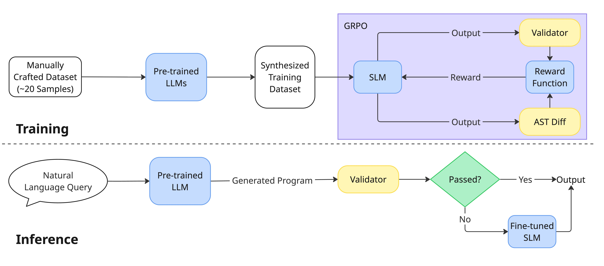

Lean 4 is one of four evaluated DSLs: the Lean parser validates generated code, NuminaMath Lean 4 problems supply data, and a Lean-specific similarity metric drives rewards.
Abstract
Large language models (LLMs) have shown impressive capabilities in code generation across many programming languages but even state-of-the-art LLMs generate programs that contain syntactic errors and fail to complete the given tasks, especially for low-resource programming languages (LRPLs). In addition, the high cost of training makes finetuning LLMs unaffordable for those with constrained computational resources, further weakening the effectiveness of LLMs for code generation. In this work, we propose SLMFix, a novel code generation pipeline that leverages a small language model (SLM) finetuned using reinforcement learning (RL) techniques to fix syntactic errors in LLM-generated programs for domain-specific languages (DSLs) based on interpreter feedback. Our experimental results demonstrate the effectiveness and generalizability of our approach across multiple DSLs, improving the validator pass rates by 40% on LRPLs and eliminating more than 50% of syntactic errors for high-resource DSLs. Notably, SLMFix brings substantial performance improvement to the base model and outperforms supervised finetuning approach even for 7B models on LRPLs including Ansible and Lean, showing the potential of our approach in improving the quality of LLM-generated programs.
Problem
LLMs often produce syntactically invalid programs in low-resource domain-specific languages such as Ansible and Lean. Finetuning large models to fix this is expensive for groups with limited compute.
Approach
A frozen general-purpose LLM generates an initial program, and a static validator checks it; for Lean, the built-in parser serves as the validator. If errors are found, a small language model trained with GRPO revises the program using the prompt and the error messages. The RL reward combines a validator pass signal with a semantic similarity score. For Lean, that score is based on token, declaration, and tactic overlap with the ground truth. Lean data comes from NuminaMath competition problems formalized in Lean 4.

Figure 1: The overview of the proposed training and inference pipelines.
Results
Across Ansible, Bash, SQL, and Lean, SLMFix raises validator pass rates by over 40% on average for the low-resource languages. On Lean, it substantially improves pass rates for the open-source 7B and 30B base models and outperforms supervised finetuning.
Base LLM
Base
SFT
SLMFix
GPT-5.4 mini
84.42%
-
89.91%
Qwen3-Coder 30B A3B
39.23%
-
79.81%
Qwen-2.5-Coder 7B
15.96%
7.31%
75.48%
Lean validator pass rate: base model vs. SLMFix (SFT shown where reported)